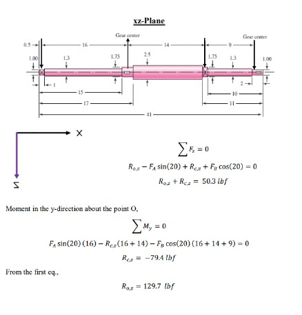

Bearing Design
Skills :
Description :
The proposed shaft design is meant for transmitting force between gears, with estimated dimensions provided for the bearing surfaces. The shaft rotates at a specific speed, and the goal is to achieve a long bearing life with high reliability. The forces acting on the bearings at both ends of the shaft are calculated based on the requirements of the application, and an adjustment factor is applied to account for different working conditions.
The next step is to find the Basic Load Ratings for the ball bearings at both ends. This rating tells us how much load the bearings can handle without failing over time. Once the load ratings are calculated, an online catalog is used to select bearings that meet these requirements, both in terms of load capacity and size. If needed, adjustments will be made to the bearing surfaces to ensure they fit properly with the selected bearings.
Finally, the bearings was be drawn in SolidWorks, a 3D modeling software, to make sure they fit well with the shaft. This model will help check the design and make sure the bearings are correctly integrated into the shaft, ensuring everything works smoothly before further development or manufacturing.
Get in Touch
Website designed and developed by me using template provided by HTML5 UP © 2024. All rights reserved.